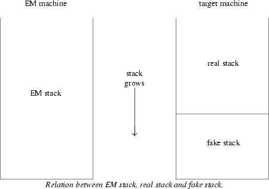
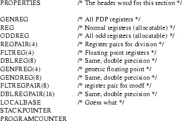
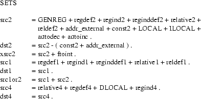

from the
Amsterdam Compiler Kit
Second Revised Edition
ABSTRACT
Hans van
Staveren
Dept. of Mathematics and Computer Science
Vrije Universiteit
Amsterdam, The Netherlands
The Amsterdam Compiler Kit is a collection of tools designed to help automate the process of compiler building. Part of it is a table driven code generator, called cg, and a program to check and translate machine description tables called cgg. This document provides a description of the internal workings of cg, and a description of syntax and semantics of the driving table. This is required reading for those wishing to write a new table.
Part of the Amsterdam Compiler Kit is a code generator system consisting of a code generator generator (cgg for short) and some machine independent C code. Cgg reads a machine description table and creates two files, tables.h and tables.c. These are then used together with other C code to produce a code generator for the machine at hand.
This in turn reads compact EM code and produces assembly code. The remainder of this document will first broadly describe the working of the code generator, then the machine table will be described after which some light is shed onto the internal workings of the code generator.
The reader is assumed to have at least a vague notion about the semantics of the intermediary EM code. Someone wishing to write a table for a new machine should be thoroughly acquainted with EM code and the assembly code of the machine at hand.
This section can be skipped by anyone not familiar with the first version. It is not needed to understand the current version.
This paper describes the second version of the code generator system. Although the code generator itself is for the main part unchanged, the table format has been drastically redesigned and the opportunities to make faulty tables are reduced. The format is now aesthaticly more pleasing (according to me that is), mainly because the previous version was designed for one line code rules, which did not work out that way.
The ‘SCRATCH’ property is now automatically generated by cgg, erase and setcc calls and their ilk are now no longer needed (read: can no longer be forgotten) and all this because the table now knows what the machine instructions look like and what arguments they destroy.
Checks are now made for register types, so it is no longer possible to generate a ‘regind2’ token with a floating point register as a base. In general, if the instructions of the machine are correctly defined, it is no longer possible to generate code that does not assemble, which of course does not mean that it is not possible to generate assembly code that does not do what was intended!
Checks are made now for missing moves, tests, coercions, etc. There is a form of procedure call now to reduce table size: it is no longer necessary to write the code for conditional instructions six times.
The inreg() pseudo-function returns other results!!
The code generator or cg tries to generate good code by simulating the stack of the compiled program and delaying emission of code as long as possible. It also keeps track of register contents, which enables it to eliminate redundant moves, and tries to eliminate redundant tests by keeping information about condition code status, if applicable for the machine.
Cg maintains a ‘fake stack’ containing ‘tokens’ that are built by executing the pseudo code contained in the code rules given by the table writer. One can think of the fake stack as a logical extension of the real stack the compiled program will have when run. Alternatively one can think of the real stack as an infinite extension at the bottom of the fake stack. Both ways, the concatenation of the real stack and the fake stack will be the stack as it would have been on a real EM machine (see figure).

During code generation tokens will be kept on the fake stack as long as possible but when they are moved to the real stack, by generating code for the push, all tokens above†
the pushed tokens will be pushed also, so the fake stack will not contain holes.
The information about the machine that cg needs has to be given in a machine description table, with as a major part a list of code rules telling cg what to do when certain EM-instructions occur with certain tokens on the fake stack. Not all possible fake stack possibilities have to be given of course, there is a possibility for providing rewriting rules, or coercions as they are called in this document.
The main loop of cg is:
|
1) |
find a pattern of EM instructions starting at the current one to generate code for. This pattern will usually be of length one but longer patterns can be used. Process any pseudo-instructions found. |
|
2) |
Select one of the possibly many stack patterns that go with this EM pattern on the basis of heuristics, look ahead or both. The cost fields provided in the token definitions and instruction definitions are used to compute costs during look ahead. |
|
3) |
Force the current fake stack contents to match the pattern. This may involve copying tokens to registers, making dummy transformations, e.g. to transform a ‘local’ into an ‘indexed from register’ or might even cause the move of the complete fake stack contents to the real stack and then back into registers if no suitable coercions were provided by the table writer. |
|
4) |
Execute the pseudocode associated with the code rule just selected, this may cause registers to be allocated, code to be emitted etc.. |
|
5) |
Put tokens onto the fake stack to reflect the result of the operation. |
|
6) |
Insert some EM instructions into the stream; this is possible but not common. |
|
7) |
Account for the cost. The cost is kept in a (space, time) vector and look ahead decisions are based on a linear combination of these. The code generator calls on itself recursively during look ahead, and the recursive incarnations return the costs they made. The costs the top-level code generator makes is of course irrelevant. |
The table that drives cg is not read in every time, but instead is used at compile time of cg to set parameters and to load pseudocode tables. A program called cgg reads the table and produces large lists of numbers that are compiled together with machine independent code to produce a code generator for the machine at hand.
Part of the information needed is not easily expressed in this table format and must be supplied in two separate files, mach.h and mach.c. Their contents are described later in this document.
If the machine has more than enough registers to generate code with, it is possible to reserve some of them for use as register variables. If it has not, this section may be skipped and any references to register variables in the rest of this document may be ignored.
The front ends generate messages to the back ends telling them which local variables could go into registers. The information given is the offset of the local, its size and type and a scoring number, roughly the number of times it occurs.
The decision which variable to put in which register is taken by the machine independent part of cg with the help of a scoring function provided by the table writer in mach.c. The types of variables known are
|
reg_any |
Just a variable of some integer type. Nothing special known about it. |
|
reg_float |
A floating point variable. |
|
reg_loop |
A loop control variable. |
|
reg_pointer |
A pointer variable. Usually they are better candidates to put in registers. |
If register variables are used, more functions must be supplied in mach.c. These functions are explained later.
The machine description table consists of the concatenation of the following sections:
|
1) |
Constant definitions |
|
2) |
Property definitions |
|
3) |
Register definitions |
|
4) |
Token definitions |
|
5) |
Set definitions |
|
6) |
Instruction definitions |
|
7) |
Move definitions |
|
8) |
Test definitions |
|
9) |
Stack definitions |
|
10) |
Coercions |
|
11) |
Code rules |
This is the order in the table but the descriptions in this document will use a slightly different order. All sections except the first start with an uppercase header word. Examples may be given in early stages that use knowledge that is explained in a later stage. If something is not clear the first time, please read on. All will clear up in a couple of pages.
Input is in free format, white space and newlines may be used at will to improve legibility. Identifiers used in the table have the same syntax as C identifiers, upper and lower case considered different, all characters significant. Here is a list of reserved words; all of these are unavailable as identifiers.

C style comments are accepted.
/* this is a comment */
If the standard constant facility is not enough the C-preprocessor can be used to enhance the table format.
Integers in the table have the normal C-style syntax. Decimal by default, octal when preceded by a 0 and hexadecimal when preceded by 0x.
In the first part of the table some constants can be defined, most with the syntax
NAME=value
value being an integer or string. Three constants must be defined here:
|
EM_WSIZE |
Number of bytes in a machine word. This is the number of bytes a loc instruction will put on the stack. |
|
EM_PSIZE |
Number of bytes in a pointer. This is the number of bytes a lal instruction will put on the stack. |
|
EM_BSIZE |
Number of bytes in the hole between AB and LB. If the calling sequence just saves PC and LB this size will be twice the pointersize. |
EM_WSIZE and EM_PSIZE are checked when a program is compiled with the resulting code generator. EM_BSIZE is used by cg to add to the offset of instructions dealing with locals having positive offsets, i.e. parameters.
Other constants can be defined here to be used as mnemonics later in the table.
Optional is the definition of a printformat for integers in the code file. This is given as
FORMAT = string
The string must be a valid printf(III) format, and defaults to "%ld". For example on the PDP-11 one can use
FORMAT= "0%lo"
to satisfy the old UNIX assembler that reads octal unless followed by a period, and the ACK assembler that follows C conventions.
Tables under control of source code control systems like sccs or rcs can put their id-string here, for example
rcsid="$Header$"
These strings, like all strings in the table, will eventually end up in the binary code generator produced.
Optionally one can give the factors with which the size and time parts of the cost vector have to be multiplied to ensure they have the same order of magnitude. This can be done as
SIZEFACTOR = C3/C4
TIMEFACTOR = C1/C2
Above numbers must be read as rational numbers. Defaults are 1/1 for both of them. These constants set the default size/time tradeoff in the code generator, so if TIMEFACTOR and SIZEFACTOR are both 1 the code generator will choose at random between two code sequences where one has cost (10,4) and the other has cost (8,6). See also the description of the cost field below.
This part of the table defines the list of properties that can be used to differentiate between register classes. It consists of a list of user-defined identifiers optionally followed by the size of the property in parentheses, default EM_WSIZE. Example for the PDP-11:

Registers are allocated by asking for a property, so if for some reason in later parts of the table one particular register must be allocated it has to have a unique property.
The next part of the tables describes the various registers of the machine and defines identifiers to be used in later parts of the tables. Syntax:
<register definitions> : REGISTERS <list of definitions>
<definition> : <registerlist> ’:’ <propertylist> <optional regvar> ’.’
<register> : ident [ ’(’ string ’)’ ] [ ’=’ ident [ ’+’ ident ] ]
Example for the PDP-11:

The names in the left hand lists are names of registers as used in the table. They can optionally be followed by a string in parentheses, their name as far as the assembler is concerned. The default assembler name is the same as the table name. A name can also be followed by
= othername
or
= othername + othername
which says that the register is composed of the parts after the ’=’ sign. The identifiers at the right hand side of the lists are names of properties. The end of each register definition is a period.
It might seem wise to list every property of a register, so one might give r0 the extra property MFPTREG named after the not too well known MFPT instruction on newer PDP-11 types, but this is not a good idea, especially since no use can be made of that instruction anyway. Every extra property means the register set is more unorthogonal and cg execution time is influenced by that, because it has to take into account a larger set of registers that are not equivalent. So try to keep the number of different register classes to a minimum. When faced with the choice between two possible code rules for a nonfrequent EM sequence, one being elegant but requiring an extra property, and the other less elegant, elegance should probably loose.
Tables that implement register variables must mark registers to be used for variable storage here by following the list of properties by one of the following:
regvar or regvar(reg_any)
regvar(reg_loop)
regvar(reg_pointer)
regvar(reg_float)
meaning they are candidates for that type of variable. All register variables of one type must be of the same size, and they may have no subregisters. Such registers are not available for normal code generation.
The next part describes all possible tokens that can reside on the fake stack during code generation. Attributes of a token are described as a C struct declaration; this is followed by the size of the token in bytes, optionally followed by the cost of the token when used as an addressing mode and the format to be used on output.
In general, when writing a table, it is not wise to try to think of all necessary tokens in advance. While writing the necessity or advisability for some token will be seen and it can then be added together with the stacking rules and coercions needed.
Tokens should usually be declared for every addressing mode of the machine at hand and for every size directly usable in a machine instruction. Example for the PDP-11 (incomplete):

Types allowed in the struct are ADDR, INT and all register properties. The type ADDR means a string and an integer, which is output as string+integer, and arithmetic on mixed ADDR and INT is possible. This is the right mode for anything that can be an assembler address expression. The type of the register in the token is strict. At any assignment of an expression of type register to a token attribute of type register cgg will check if the set of possible results from the expression is a subset of the set of permissible values for the token attribute.
The cost-field is made up by the word cost followed by two numbers in parentheses, the size and timecosts of this token when output in the code file. If omitted, zero cost is assumed. While generating code, cg keeps track of a linear combination of these costs together with the costs of the instructions itself which we will see later. The coefficients of this linear combination are influenced by two things:
|
1) |
The SIZEFACTOR and TIMEFACTOR constants, as mentioned above. |
|
2) |
A run time option to cg that can adjust the time/space tradeoff to all positions from 100% time to 100% space. |
By supplying different code rules in certain situations it is possible to get a code generator that can adjust its code to the need of the moment. This is probably most useful with small machines, experience has shown that on the larger micro’s and mini’s the difference between time-optimal and space-optimal code is often small.
The printformat consists of a list of strings intermixed with attributes from the token. Strings are output literally, attributes are printed according to their type and value. Tokens without a printformat should never be output, and cgg checks for this.
Notice that tokens need not correspond to addressing modes; the regconst2 token listed above, meaning the sum of the contents of the register and the constant, has no corresponding addressing mode on the PDP-11, but is included so that a sequence of add constant, load indirect, can be handled efficiently. This regconst2 token is needed as part of the path
REG -> regconst2 -> regind2
of which the first and the last "exist" and the middle is needed only as an intermediate step.
Tokens with name ‘LOCAL’ or ‘DLOCAL’ are a special case when register variables are used, this is explained further in the section on token descriptions.
Usually machines have certain collections of addressing modes that can be used with certain instructions. The stack patterns in the table are lists of these collections and since it is cumbersome to write out these long lists every time, there is a section here to give names to these collections. Please note that it is not forbidden to write out a set in the remainder of the table, but for clarity it is usually better not to.
Example for the PDP-11 (incomplete):

Permissible in the set construction are all the usual set operators, i.e.
|
+ |
set union |
|
- |
set difference |
|
* |
set intersection |
Normal operator priorities apply, and parentheses can be used. Every token identifier is also a set identifier denoting the singleton collection of tokens containing just itself. Every register property as defined above is also a set matching all registers with that property. The standard set identifier ALL denotes the collection of all tokens.
In the next part of the table the instructions for the machine are declared together with information about their operands. Example for the PDP-11(very incomplete):
INSTRUCTIONS
/* default cost */
cost(2,600)
/* Normal instructions */
adc dst2:rw:cc .
add src2:ro,dst2:rw:cc cost(2,450).
ash src2:ro,REG:rw:cc .
ashc src2:ro,REGPAIR+ODDREG:rw .
asl dst2:rw:cc .
asr dst2:rw:cc .
bhis "bcc" label .
/* floating point instructions */
movf "ldf" fsrc,freg .
movf "stf" freg,fdst .
As the examples show an instruction definition consists of the name of the instruction, optionally followed by an assembler mnemonic in quotes-default is the name itself-and then a list of operands, optionally followed by the cost and then a period. If the cost is omitted the cost just after the word INSTRUCTIONS is assumed, if that is also omitted the cost is zero. The cost must be known by cg of course if it has multiple code generation paths to choose from.
For each operand we have the set of possible token values, followed by a qualifier that can be
|
:ro |
signifies that this operand is read only, so it can be replaced by a register with the same contents if available. |
|
:rw |
signifies that the operand is read-write |
|
:wo |
signifies that the operand is write only. |
|
:cc |
says that after the instruction is finished, the condition codes are set to this operand. If none of the operands have the :cc qualifier set, cg will assume that condition codes were unaffected (but see below). |
The first three qualifiers are of course mutually exclusive. The :ro qualifier does not cause any special action in the current implementation, and the :wo and :rw qualifiers are treated equal. It must be recommended however to be precise in the specifications, since later enhancements to the code generator might use them.
As the last examples show it is not necessary to give one definition for an instruction. There are machines that have very unorthogonal instruction sets, in fact most of them do, and it is possible to declare each possible combination of operands. The cgg program will check all uses of the instruction to find out which one was meant.
Although not in the PDP-11 example above there is a possibility to describe instructions that have side effects to registers not in the operand list. The only thing possible is to say that the instruction is destructive to some registers or the condition codes, by following the operand list with the word kills and a list of the things destroyed. Example for some hypothetic accumulator machine:
add source2:ro kills ACCU :cc .
The cost fields in the definitions for tokens and instructions are added together when generating code. It depends on the machine at hand whether the costs are orthogonal enough to make use of both these costs, in extreme cases every combination of instructions and operands can be given in this section, all with their own costs.
Throughout the rest of the table expressions can be used in some places. This section will give the syntax and semantics of expressions. There are four types of expressions: integer, address, register and undefined. Really the type register is nonexistent as such, for each register expression cgg keeps a set of possible values, and this set can be seen as the real type.
Type checking is performed by cgg. An operator with at least one undefined operand returns undefined except for the defined() function mentioned below. An undefined expression is interpreted as FALSE when it is needed as a truth value. It is the responsibility of the table writer to ensure no undefined expressions are ever used as initialisers for token attributes. This is unfortunately almost impossible to check for cgg so be careful.
Basic terms in an expression are
|
number |
A number is a constant of type integer. Also usable is an identifier defined to a number in the constant definition section. |
|
"string" |
A string within double quotes is a constant of type address. All the normal C style escapes may be used within the string. Also usable is an identifier defined to a string in the constant definition section. |
|
[0-9][bf] |
This must be read as a grep-pattern. It evaluates to a string that is the label name for the temporary label meant. More about this in the section on code rules. |
|
REGIDENT |
The name of a register is a constant of type register. |
|
$i |
A dollarsign followed by a number is the representation of the argument of EM instruction . The type of the operand is dependent on the instruction, sometimes it is integer, sometimes it is address. It is undefined when the instruction has no operand. Instructions with type-letter w can occur without an operand. This can be checked in the code rule with the defined() pseudo function. |
|
If it is unimaginable for the operand of the
instruction ever to be something different from a plain
integer, the type is integer, otherwise it is address. |
|
%1 |
This in general means the token mentioned first in the stack pattern. When used inside an expression the token must be a simple register. Type of this is register. |
|
%1.off |
This means attribute "off" of the first stack pattern token. Type is the same as that of attribute "off". To use this expression implies a check that all tokens in the set used have the same attribute in the same place. |
|
%off |
This means attribute "off" in the ‘current’ token. This can only be used when no confusion is possible about which token was meant, eg. in the optional boolean expressions following token sets in the move and test rules, in coercions or in the kills section inside the code rules. Same check as above. |
|
%1.1 |
This is the first subregister of the first token. Previous comments apply. |
|
%b |
A percent sign followed by a lowercase letter stands for an allocated register. This is the second allocated register. |
|
%a.2 |
The second subregister of the first allocated register. |
All normal C operators apply to integers, the + operator on addresses behaves as one would expect and the only operators allowed on register expressions are == and != . Furthermore there are some special ‘functions’:
|
defined(e) |
Returns 1 if expression e is defined, 0 otherwise. |
|
samesign(e1,e2) |
Returns 1 if integer expression e1 and e2 have the same sign. |
|
sfit(e1,e2) |
Returns 1 if integer expression e1 fits as a signed integer into a field of e2 bits, 0 otherwise. |
|
ufit(e1,e2) |
Same as above but now for unsigned e1. |
|
rom($a,n) |
Integer expression giving word n from the rom descriptor pointed at by EM instruction number a in the EM-pattern. Undefined if that descriptor does not exist. |
|
is_rom($a) |
Integer expression indicating whether EM instruction number a in the EM-pattern refers to ROM. This may be useful for generating position-independent code with the ROM in read-only memory. Is_rom enables one to see the difference between ROM references and other data references. |
|
loww($a) |
Returns the lower half of the argument of EM instruction number a. This is used to split the arguments of a ldc instruction. |
|
highw($a) |
Same for upper half. |
The next two ‘functions’ are only needed in a table that implements register variables.
|
inreg(e) |
Returns the status of the local variable with offset e from the localbase. Value is an integer, negative if the local was not allowed as a register variable, zero if it was allowed but not assigned to a register, and the type of the register if it was assigned to a register. This makes it possible to write |
inreg($1)==reg_pointer and similar things. |
|
regvar(e,t) |
Type of this is register. It returns the register the local with offset e is assigned to. The table writer guarantees the register is one of type t, with t one of reg_any, reg_loop, reg_pointer or reg_float. If t is omitted reg_any is assumed. Undefined if inreg(e)<=0 . |
The next two ‘functions’ are only needed in a table that uses the top element size information.
|
topeltsize($a) |
Returns the size of the element on top of the EM-stack at the label identified by $a. This can be used to put the top of the stack in a register at the moment of an unconditional jump. At an unconditional jump, the size of the top-element will always look 0. |
|
fallthrough($a) |
Returns 1 if the label identified by $a can be reached via fallthrough, 0 otherwise. |
Throughout the rest of the table tokens must be described, be it as operands of instructions or as stack-replacements. In all those cases we will speak about a token description. The possibilities for these will be described here.
All expressions of type register are token descriptions. The construct %1 means the token matched first in the stack pattern. All other token descriptions are those that are built on the spot. They look like this:
{ <tokenname> , <list of token attribute initializing expressions> }
All expressions are type-checked by cgg, and the number of initializers is also checked.
A special case of the last token descriptions occurs when the token name is ‘LOCAL’ or ‘DLOCAL’ and the table uses register variables. The first token attribute then must be of type integer and the token description is automagically replaced by the register chosen if the LOCAL (wordsize) or DLOCAL (twice the wordsize) was assigned to a register.
The largest section of the tables consists of the code generation rules. They specify EM patterns, stack patterns, code to be generated etc. Broadly the syntax is
code rule : EM-part code-part EM-part : EM-pattern | procedure-heading code-part : code-description | procedure-call code-description : stackpattern kills allocates generates yields leaving
Ignoring the "procedure"-part for now, the description for the EM-pattern and the code-description follows. Almost everything here is optional, the minimum code rule is:
pat nop
that will simply throw away nop instructions.
The EM pattern consists of a list of EM mnemonics preceded by the word pat optionally followed by a boolean expression. Examples:
pat loe
will match a single loe instruction,
pat loc loc cif $1==2 && $2==8
is a pattern that will match
loc 2
loc 8
cif
and
pat lol inc stl $1==$3
will match for example
|
lol -2 |
lol 4 |
||||
|
inc |
but not |
inc |
|||
|
stl -2 |
stl -4 |
A missing boolean expression evaluates to TRUE.
The code generator will match the longest EM pattern on every occasion, if two patterns of the same length match the first in the table will be chosen, while all patterns of length greater than or equal to three are considered to be of the same length. This rule of three is an unfortunate implementation dependent restriction, but patterns longer than three EM instructions are luckily not needed too often.
The EM mnemonic may also be the pseudo-instruction lab, which matches a label. Its argument can be used in testing on topeltsize and fallthrough. When this pattern is specified, the label should be defined explicitly with a labeldef statement.
Following the EM-pattern there may be more than one code rule, cg will choose using heuristics and the cost information provided with the instruction and token definitions. Owing to parsing reasons of the table, the word with (see below) is mandatory when there are more code rules attached to one EM-pattern. The stack pattern may be empty however.
The optional stack pattern is a list of token sets preceded by the word with. The token sets are usually represented by set identifiers for clarity. No boolean expression is allowed here. The first expression is the one that matches the top of the stack.
If the pattern is followed by the word STACK it only matches if there is nothing else on the fake stack, and the code generator will stack everything not matched at the start of the rule.
The pattern can be preceded with the word exact following the with that tells the code generator not to try to coerce to the pattern but only to use it when it is already present on the fake stack. There are two reasons for this construction, correctness and speed. It is needed for correctness when the pattern contains a register that is not transparent when data is moved through it.
Example: on the PDP-11 the shortest code for
lae a
loi 8
lae b
sti 8
is
movf _a,fr0
movf fr0,_b
if the floating point processor is in double precision mode and fr0 is free. Unfortunately this is not correct since a trap can occur on certain kinds of data. This could happen if there was a stack pattern for sti 8 like this:
with DBLREG
The code generator would then find that coercing the 8-byte global _a to a floating point register and then storing it to _b was the cheapest, if the space/time knob was turned far enough to space. This can be prevented by changing the stack pattern to
with exact DBLREG
It is unfortunate that the type information is no longer present, since if _a really is a floating point number the move could be made without error.
The second reason for the exact construct is speed. When the code generator has a long list of possible stack patterns for one EM pattern it can waste much time trying to find coercions to all of them, while the mere presence of such a long list indicates that the table writer has given many special cases. Prepending all the special cases by exact will stop the code generator from trying to find things that either cannot be done, or are too expensive anyway.
So in general it is wise to prepend all stack patterns that cannot be made by coercions with exact.
Using both exact and STACK in the stack pattern has the effect that the rule will only be taken if there is nothing else on the fake stack.
The optional kills part describes certain tokens that should neither remain on the fake stack, nor remembered as contents of registers. This is usually only required with store operations. The entire fake stack, except for the part matched in the stack pattern, is searched for tokens matching the expression and they are copied to the real stack. Every register that contains the token is marked as empty.
Syntax is
kills <list of things to kill separated by commas>
thing to kill : token set optionally followed by boolean expression
Example:
kills regind2 %reg != lb || %off == $1
is a kills part used for example in the inl or stl code rule. It removes all register offsetted tokens where the register is not the localbase plus the local in which the store is done. The necessity for this can be seen from the following example:
lol 4
inl 4
stl 6
Without a proper kills part in the rule for inl code would be generated as here
inc 4(r5)
mov 4(r5),6(r5)
so local 6 would be given the new value of local 4 instead of the old as the EM code prescribed.
When generating code for an EM-instruction like sti it is necessary to write a line in the table like
kills all_except_constant_or_register
where the long identifier is a set containing all tokens that can be the destination of some random indirect store. These indirect stores are the main reason to prevent this kills line to be deduced automatically by cgg.
When generating something like a branch instruction it might be needed to empty the fake stack completely. This can of course be done with
kills ALL
or by ending the stack pattern with the word STACK, if the stack pattern does not start with exact. The latter does not erase the contents of registers.
It is unfortunate that this part is still present in the table but it is too much for now to let the cgg program discover what rules ruin what kind of tokens. Maybe some day .....
The optional register allocation part describes the registers needed. Syntax is
uses <list of use elements separated by commas>
where itemlist is a list of three kinds of things:
|
1) |
reusing < a token description >, for example %1. |
|
This will instruct the code generator that all registers contained in this token can be reused if they are not used in another token on the fakestack, so that they are available for allocation in this uses line if they were only used in that token. See example below. |
|
2) |
a register property. |
|
This will allocate a register with that property, that is marked as empty at this point. Look ahead can be performed if there is more than one register available. |
|
3) |
a register property with initialization. |
|
This will allocate the register as in 2) but will also initialize it. This eases the task of the code generator because it can find a register already filled with the right value if it exists. |
Examples:
uses ODDREG
will allocate an odd register, while
uses REG={regind2,lb,$1}
will allocate a register while simultaneously
filling it with the asked value.
Inside the coercion from xsrc2 to REG in the PDP-11 table
the following line can be found.
uses reusing %1, REG=%1
This tells the code generator that registers contained in %1 can be used again and asks to fill the register allocated with %1. So if %1={regind2,r3,"4"} and r3 is not in use elsewhere on the fake stack the following code might be generated.
mov 4(r3),r3
In the rest of the line the registers allocated can be named by %a and %b.1,%b.2, i.e. with lower case letters in order of allocation.
Code to be generated, also optionally, is specified as the word gen followed by a list of items of the following kind:
|
1) |
An instruction name followed by a comma-separated list of token descriptions. Cgg will search the instruction definitions for the machine to find a suitable instruction. At code generation time the assembler name of the instruction will be output followed by a space, followed by a comma separated list of tokens. |
|
In the table an instruction without operands must be followed by a period. The author of cgg could not get yacc to accept his syntax without it. Sorry about this. |
|
2) |
a move call. This has the following syntax: |
move <token description>,<token description> Moves are handled specially since that enables the code generator to keep track of register contents. Example: move r3,{regind2,lb,$1}
will generate code to move r3 to $1(r5) except when r3 already was a copy of $1(r5). Then the code will be omitted. The rules describing how to move things to each other can be found in the move definitions section described below. |
|
3) |
For machines that have condition codes, which alas most of them do, there are provisions to remember condition code settings and prevent needless testing. To set the condition code to a token put in the code the following call: |
test <token description> This will generate a test if the condition codes were not already set to that token. The rules describing how to test things can be found in the test definitions section described below. See also the :cc qualifier that can be used at instruction definition time. |
|
4) |
The return statement. Only used when register variables are in use. This statement causes a call to the machine dependent C-routine regreturn. Explanation of this must wait for the description of the file mach.c below. |
|
5) |
The labeldef statement. Its only argument should be that of the lab pseudo-instruction. This is needed to generate local labels when the top element size information is used. It takes the form |
|
6) |
A temporary label of the form <digit>: may be placed here. Expressions of the form [0-9][bf] in this code rule generate the same string as is used for this label. The code generator system could probably easily be changed to make this work for assemblers that do not support this type of label by generating unique labels itself. Implementation of this is not contemplated at the moment. |
The optional stack replacement is a possibly empty list of tokens to be pushed onto the fake stack. It start with the word yields, and is followed by a list of token descriptions.
All tokens matched by the stack pattern at the beginning of the code rule are first removed and their registers deallocated. Items are pushed in the order of appearance. This means that the last item will be on the top of the stack after the push. So if the stack pattern contained two sets and they must be pushed back unchanged, they have to be specified as stack replacement
yields %2 %1
and not the other way around. This is known to cause errors in tables so watch out for this!
In exceptional cases it might be useful to leave part of an EM-pattern undone. For example, a sdl instruction might be split into two stl instructions when there is no 4-byte quantity on the stack. The EM replacement part allows one to express this. It is activated by the word leaving.
Example:
leaving stl $1 stl $1+2
The instructions are inserted in the stream so that they can match the first part of a pattern in the next step. Note that since the code generator traverses the EM instructions in a strict linear fashion, it is impossible to let the EM replacement match later parts of a pattern. So if there is a pattern
loc stl $1==0
and the input is
loc 0 sdl 4
the loc 0 will be processed first, then the sdl might be split into two stl’s but the pattern cannot match now.
A list of examples for the PDP-11 is given here. Far from being complete it gives examples of most kinds of instructions.
|
yields {const2, $1} pat ldc |
||
|
yields {const2, loww($1)} {const2, highw($1)} |
These simple patterns just push one or more tokens onto the fake stack.
pat lof
|
yields {regind2,%1,$1} |
||
|
yields {regind2,%1.reg,$1+%1.off} |
||
|
yields {relative2,$1+%1.off} |
||
|
yields {LOCAL, %1.ind + $1,2} |
This pattern shows the possibility to do different things depending on the fake stack contents, there are some rules for some specific cases plus a general rule, not preceded by exact that can always be taken after a coercion, if necessary.
pat lxl $1>3
uses REG={LOCAL, SL, 2}, REG={const2,$1-1}
gen 1:
move {regind2,%a, SL},%a
|
yields %a |
This rule shows register allocation with initialisation, and the use of a temporary label. The constant SL used here is defined to be the offset from lb of the static link, that is pushed by the Pascal compiler as the last argument of a function.
pat stf
with regconst2 xsrc2
kills allexeptcon
gen move %2,{regind2,%1.reg,$1+%1.off}
with addr_external xsrc2
kills allexeptcon
gen move %2,{relative2,$1+%1.off}
This rule shows the use of a kills part in a store instruction. The set allexeptcon contains all tokens that can be the destination of an indirect store.
pat sde
with exact FLTREG
kills posextern
gen move %1,{relative4,$1}
with exact ftolong
kills posextern
gen setl.
movfi %1.reg,{relative4,$1}
seti.
with src2 src2
kills posextern
gen move %1, {relative2, $1 }
move %2, {relative2, $1+2}
The rule for sde shows the use of the exact clause in both qualities, the first is for correctness, the second for efficiency. The third rule is taken by default, resulting in two separate stores, nothing better exists on the PDP-11.
pat sbi $1==2
with src2 REG
|
yields %2 |
with exact REG src2-REG
gen sub %2,%1
|
yields %1 |
This rule for sbi has a normal first part, and a hand optimized special case as its second part.
pat mli $1==2
with ODDREG src2
|
yields %1 |
with src2 ODDREG
|
yields %2 |
This shows the general property for rules with commutative operators, heuristics or look ahead will have to decide which rule is the best.
pat loc sli $1==1 && $2==2
with REG
|
yields %1 |
A simple rule involving a longer EM-pattern, to make use of a specialized instruction available.
pat loc loc cii $1==1 && $2==2
with src1or2
uses reusing %1,REG
|
yields %a |
A somewhat more complicated example of the same. Note the reusing clause.
pat loc loc loc cii $1>=0 && $2==2 && $3==4
Shows a trivial example of EM-replacement. This is a rule that could be done by the peephole optimizer, if word order in longs was defined in EM. On a ‘big-endian’ machine the two replacement instructions would be the other way around.
pat and $1==2
with const2 REG
gen bic {const2,~%1.num},%2yields %2
with REG const2
gen bic {const2,~%2.num},%1yields %1
with REG REG
gen com %1
|
yields %2 |
Shows the way to handle the absence of an and-instruction.
pat set $1==2
with REG
uses REG={const2,1}
|
yields %a |
Shows the building of a word-size set.
pat lae aar $2==2 && rom($1,3)==1 && rom($1,1)==0
pat lae aar $2==2 && rom($1,3)==1 && rom($1,1)!=0
Two rules showing the use of the rom pseudo function, and some array optimalisation.
pat bra
with STACK
gen jbr {label, $1}
A simple jump. The stack pattern guarantees that everything will be stacked before the jump is taken.
|
topeltsize($1)==2 && !fallthrough($1) |
yields r0 pat lab |
|||||||||
|
topeltsize($1)==2 && fallthrough($1) |
with src2
gen move %1,r0
|
yields r0 |
pat lab topeltsize($1)!=2
with STACK
kills all
gen labeldef $1
pat bra topeltsize($1)==2
with src2 STACK
gen move %1,d0
pat bra topeltsize($1)!=2
with STACK
gen jbr {label, $1}
The combination of these patterns make sure that the top of the EM-stack will be in register r0 whenever necessary. The top element size mechanism will also show a size of 0 whenever a conditional branch to a label occurs. This saves a lot of patterns and hardly decreases performance. When the same register is used to return function results, this can save many moves to and from the stack.
pat cal
with STACK
gen jsr pc,{label, $1}
A simple call. Same comments as previous rule.
|
yields r0 |
||
|
yields r1 r0 |
Shows the return area conventions of the PDP-11 table. At this point a reminder: the asp instruction, and some other instructions must leave the function return area intact. See the defining document for EM for exact information.
pat ret $1==0
with STACK
gen mov lb,sp
rts pc
This shows a rule for ret in a table not using register variables. In a table with register variables the gen part would just contain return.
pat blm
with REG REG
uses REG={const2,$1/2}
gen 1:
mov {autoinc,%2},{autoinc,%1}
sob %a,{label,1b}
This rule for blm already uses three registers of the same type. Cgg contains code to check all rules to see if they can be applied from an empty fakestack. It uses the marriage thesis from Hall, a thesis from combinatorial mathematics, to accomplish this.
pat exg $1==2
|
yields %1 %2 |
This rule shows the exchanging of two elements on the fake stack.
To start this section it must be admitted at once that the word procedure is chosen here mainly for its advertising value. It more resembles a glorified goto but this of course can not be admitted in the glossy brochures. This document will continue to use the word procedure.
The need for procedures was felt after the first version of the code generator system was made, mainly because of conditional instructions. Often the code sequences for tlt, tle, teq, tne, tge and tgt were identical apart from one opcode in the code rule. The code sequence had to be written out six times however. Not only did this increase the table size and bore the table writer, it also led to errors when changing the table since it happened now and then that five out of six rules were changed.
In general the procedures in this table format are used to keep one copy instead of six of the code rules for all sorts of conditionals and one out of two for things like increment/decrement.
And now the syntax, first the procedure definition, which must indeed be defined before the call because cgg is one-pass. The procedure heading replaces the EM-pattern in a code rule and looks like this:
proc <identifier> <optional example>
The identifier is used in later calls and the example must be used if expressions like $1 are used in the code rule.
<optional example> : example <list of EM-instructions>
so an example looks just like an EM-pattern, but without the optional boolean expression. The example is needed to know the types of $1 expressions. The current version of cgg does not check correctness of the example, so be careful.
A procedure is called with string-parameters, that are assembler opcodes. They can be accessed by appending the string ‘[<number>]’ to a table opcode, where <number> is the parameter number. The string ‘*’ can be used as an equivalent for ‘[1]’. Just in case this is not clear, here is an example for a procedure to increment/decrement a register.
|
/* in the INSTRUCTIONS part of course */ |
proc incdec
with REG
|
yields %1 |
The procedure is called with parameter "inc" or "dec".
The procedure call is given instead of the code-part of the code rule and looks like this
call <identifier> ’(’ <comma-separated list of strings> ’)’
which leads to the following large example:
proc bxx example beq
with src2 src2 STACK
gen cmp %2,%1
jxx* {label, $1}
|
call bxx("jlt") |
||
|
call bxx("jle") |
||
|
call bxx("jeq") |
||
|
call bxx("jne") |
||
|
call bxx("jgt") |
||
|
call bxx("jge") |
We now jump back to near the beginning of the table where the move definitions are found. The move definitions directly follow the instruction definitions.
In certain cases a move is called for, either explicitly when a move instruction is used in a code rule, or implicitly in a register initialization. The different code rules possible to move data from one spot to another are described here. Example for the PDP-11:
MOVES
from const2 %num==0 to dst2
gen clr %2
from src2 to dst2
gen mov %1,%2
from FLTREG to longf4-FLTREG
gen movfo %1,%2
from longf4-FLTREG to FLTREG
gen movof %1,%2
The example shows that the syntax is just
from <source> to <destination> gen <list of instructions>
Source and destination are a token set, optionally followed by a boolean expression. The code generator will take the first move that matches, whenever a move is necessary. Cgg checks whether all moves called for in the table are present.
This part describes the instructions necessary to set the condition codes to a certain token. These rules are needed when the test instruction is used in code rules. Example for the PDP-11:
TESTS
to test src2
gen tst %1
So syntax is just
to test <source> gen <instruction list>
Source is the same thing as in the move definition. Cgg checks whether all tests called for in the table are present.
A central part in code generation is taken by the coercions. It is the responsibility of the table writer to provide all necessary coercions so that code generation can continue. The minimal set of coercions are the coercions to unstack every token expression, in combination with the rules to stack every token. It should not be possible to smuggle a table through cgg without these basic set available.
If these are present the code generator can always make the necessary transformations by stacking and unstacking. Of course for code quality it is usually best to provide extra coercions to prevent this stacking to take place. Cg discriminates three types of coercions:
|
1) |
Unstacking coercions. This category can use the uses clause in its code. |
|
2) |
Splitting coercions, these are the coercions that split larger tokens into smaller ones. |
|
3) |
Transforming coercions, these are the coercions that transform a token into another of the same size. This category can use the uses clause in its code. |
When a stack configuration does not match the stack pattern coercions are searched for in the following order:
|
1) |
First tokens are split if necessary to get their sizes right. |
|
2) |
Then transforming coercions are found that will make the pattern match. |
|
3) |
Finally if the stack pattern is longer than the fake stack contents unstacking coercions will be used to fill up the pattern. |
At any point, when coercions are missing so code generation could not continue, the offending tokens are stacked.
The next part of the table defines the stacking rules for the machine. Each token that may reside on the fake stack must have a rule attached to put it on the real stack. Example for the PDP-11:
STACKINGRULES
from const2 %num==0 to STACK
gen clr {autodec,sp}
from src2 to STACK
gen mov %1,{autodec,sp}
from regconst2 to STACK
gen mov %1.reg,{autodec,sp}
add {addr_external, %1.off},{regdef2,sp}
from DBLREG to STACK
gen movf %1,{autodec,sp}
from FLTREG to STACK
gen movfo %1,{autodec,sp}
from regind8 to STACK
uses REG
gen move %1.reg,%a
add {addr_external, 8+%1.off},%a
mov {autodec, %a},{autodec,sp}
mov {autodec, %a},{autodec,sp}
mov {autodec, %a},{autodec,sp}
mov {autodec, %a},{autodec,sp}
These examples should be self-explanatory, except maybe for the last one. It is possible inside a stacking-rule to use a register. Since however the stacking might also take place at a moment when no registers are free, it is mandatory that for each token there is one stackingrule that does not use a register. The code generator uses the first rule possible.
The next part of the table defines the coercions that are possible on the defined tokens. Example for the PDP-11:
COERCIONS
from STACK
uses REG
|
yields %a |
from STACK
uses DBLREG
|
yields %a |
from STACK
uses REGPAIR
gen mov {autoinc,sp},%a.1
|
yields %a |
These three coercions just deliver a certain type of register by popping it from the real stack.
|
yields {regind2,lb,%1.ind} from DLOCAL |
||
|
yields {regind4,lb,%1.ind} from REG |
||
|
yields {regconst2, %1, 0} |
These three are zero-cost rewriting rules.
from regconst2 %1.off==1
uses reusing %1,REG=%1.reg
|
yields %a |
from regconst2
uses reusing %1,REG=%1.reg
gen add {addr_external, %1.off},%ayields %a
from addr_local
uses REG
gen mov lb,%a
|
yields %a |
The last three are three different cases of the coercion register+constant to register. Only in the last case is it always necessary to allocate an extra register, since arithmetic on the localbase is unthinkable.
from xsrc2
|
yields %a |
from longf4
|
yields %a |
from double8
|
yields %a |
from src1
uses REG={const2,0}
|
yields %a |
These examples show the coercion of different tokens to a register of the needed type. The last one shows the trouble needed on a PDP-11 to ensure bytes are not sign-extended. In EM it is defined that the result of a loi 1 instruction is an integer in the range 0..255.
|
yields %1.2 %1.1 from regind4 |
||
|
yields {regind2,%1.reg,2+%1.off} |
{regind2,%1.reg,%1.off}
|
yields {relative2,2+%1.off} |
{relative2,%1.off}
The last examples are splitting rules.
The examples show that all coercions change one token on the fake stack into one or more others, possibly generating code. The STACK token is supposed to be on the fake stack when it is really empty, and can only be changed into one other token.
The table writer must also supply two files containing machine dependent declarations and C code. These files are mach.h and mach.c.
Three different types of integer coexist in the code generator and their range depends on the machine at hand. They are defined depending on the Target EM_WSIZE, or TEM_WSIZE, and TEM_PSIZE. The type ’int’ is used for things like counters that won’t require more than 16 bits precision. The type ’word’ is used among others to assemble datawords and is of type ’long’. The type ’full’ is used for addresses and is of type ’long’ if TEM_WSIZE>2 or TEM_PSIZE>2.
In macro and function definitions in later paragraphs implicit typing will be used for parameters, that is parameters starting with an ’s’ will be of type string, and the letters ’i’,’w’,’f’ will stand for int, word and full respectively.
Some global variables are present in the code generator that can be manipulated by the routines in mach.h and mach.c.
The declarations are:
|
FILE *codefile; |
/* code is emitted on this stream */ |
|
word part_word; |
/* words to be output are put together here */ |
|
int part_size; |
/* number of bytes already put in part_word */ |
|
char str[]; |
/* Last string read in */ |
|
long argval; |
/* Last int read and kept */ |
In the file mach.h a collection of macros is defined that have to do with formatting of assembly code for the machine at hand. Some of these macros can of course be left undefined in which case the macro calls are left in the source and will be treated as function calls. These functions can then be defined in mach.c.
The macros to be defined are:
|
ex_ap(s) |
Must print the magic incantations that will mark the symbol to be exported to other modules. This is the translation of the EM exa and exp instructions. |
|
in_ap(s) |
Same to import the symbol. Translation of ina and inp. |
|
newplb(s) |
Must print the definition of procedure label s. If left undefined the newilb() macro is used instead. |
|
newilb(s) |
Must print the definition of instruction label s. |
|
newdlb(s) |
Must print the definition of data label s. |
|
dlbdlb(s1,s2) |
Must define data label s1 to be equal to s2. |
|
newlbss(s,f) |
Must declare a piece of memory initialized to BSS_INIT(see below) of length f and with label s. |
|
cst_fmt |
Format to be used when converting constant arguments of EM instructions to string. Argument to be formatted will be ’full’. |
|
off_fmt |
Format to be used for integer part of label+constant, argument will be ’full’. |
fmt_ilb(ip,il,s)
|
Must use the numbers ip and il that are a procedure number and a label number respectively and copy a string to s that must be unique for that combination. This procedure is optional, if it is not given ilb_fmt must be defined as below. |
|
ilb_fmt |
Format to be used for creation of unique instruction labels. Arguments will be a unique procedure number (int) and the label number (int). |
|
dlb_fmt |
Format to be used for printing numeric data labels. Argument will be ’int’. |
|
hol_fmt |
Format to be used for generation of labels for space generated by a hol pseudo. Argument will be ’int’. |
|
hol_off |
Format to be used for printing of the address of an element in hol space. Arguments will be the offset in the hol block (word) and the number of the hol (int). |
|
con_cst(w) |
Must generate output that will assemble into one machine word. |
|
con_ilb(s) |
Must generate output that will put the address of the instruction label into the datastream. |
|
con_dlb(s) |
Must generate output that will put the address of the data label into the datastream. |
|
fmt_id(sf,st) |
Must take the string in sf that is a nonnumeric global label, and transform it into a copy made to st that will not collide with reserved assembler words and system labels. This procedure is optional, if it is not given the id_first macro is used as defined below. |
|
id_first |
Must be a character. This is prepended to all nonnumeric global labels if their length is shorter than the maximum allowed(currently 8) or if they already start with that character. This is to avoid conflicts of user labels with system labels. |
|
BSS_INIT |
Must be a constant. This is the value filled in all the words not initialized explicitly. This is loader and system dependent. If omitted no initialization is assumed. |
#define ex_ap(y)fprintf(codefile,"\t.globl %s\n",y) #define in_ap(y)/* nothing */ #define newplb(x)fprintf(codefile,"%s:\n",x) #define newilb(x)fprintf(codefile,"%s:\n",x) #define newdlb(x)fprintf(codefile,"%s:\n",x) #define dlbdlb(x,y)fprintf(codefile,"%s=%s\n",x,y) #define newlbss(l,x)fprintf(codefile,"%s:.=.+%d.\n",l,x);
|
#define cst_fmt |
"$%d." |
|
#define off_fmt |
"%d." |
|
#define ilb_fmt |
"I%x_%x" |
|
#define dlb_fmt |
"_%d" |
|
#define hol_fmt |
"hol%d" |
|
#define hol_off |
"%ld.+hol%d" |
#define
con_cst(x)fprintf(codefile,"%ld.\n",x)
#define con_ilb(x)fprintf(codefile,"%s\n",x)
#define
con_dlb(x)fprintf(codefile,"%s\n",x)
#define id_first’_’
#define BSS_INIT0
In mach.c some functions must be supplied, mostly manipulating data resulting from pseudoinstructions. The specifications are given here, implicit typing of parameters as above.
|
- |
con_part(isz,word) |
|
This function must manipulate the globals part_word and part_size to append the isz bytes contained in word to the output stream. If part_word is full, i.e. part_size==TEM_WSIZE the function part_flush() may be called to empty the buffer. This is the function that must go through the trouble of doing byte order in words correct. |
|
- |
con_mult(w_size) |
|
This function must take the string str[] and create an integer from the string of size w_size and generate code to assemble global data for that integer. Only the sizes for which arithmetic is implemented need be handled, so if 200-byte integer division is not implemented, 200-byte integer global data don’t have to be implemented. Here one must take care of word order in long integers. |
|
- |
con_float() |
|
This function must generate code to assemble a floating point number of which the size is contained in argval and the ASCII representation in str[]. |
|
- |
prolog(f_nlocals) |
|
This function is called at the start of every procedure. Function prolog code must be generated, and room made for local variables for a total of f_nlocals bytes. |
|
- |
mes(w_mesno) |
|
This function is called when a mes pseudo is seen that is not handled by the machine independent part. The example below shows all one probably have to know about that. |
|
- |
segname[] |
|
This is not a function, but an array of four strings. These strings are put out whenever the code generator switches segments. Segments are SEGTXT, SEGCON, SEGROM and SEGBSS in that order. |
If register variables are used in a table, the program cgg will define the word REGVARS during compilation of the sources. So the following functions described here should be bracketed by #ifdef REGVARS and #endif.
|
- |
regscore(off,size,typ,freq,totyp) long off; |
|
This function should assign a score to a register
variable, the score should preferably be the estimated
number of bytes gained when it is put in a register. Off and
size are the offset and size of the variable, typ is the
type, that is reg_any, reg_pointer, reg_loop or reg_float.
Freq is the count of static occurrences, and totyp is the
type of the register it is planned to go into. |
|
- |
i_regsave() |
|
This function is called at the start of a procedure, just before register saves are done. It can be used to initialise some variables if needed. |
|
- |
f_regsave() |
|
This function is called at end of the register save sequence. It can be used to do the real saving if multiple register move instructions are available. |
|
- |
regsave(regstr,off,size) char *regstr; long off; |
|
Should either do the real saving or set up a table to have it done by f_regsave. Note that initialisation of parameters should also be done, or planned here. |
|
- |
regreturn() |
|
Should restore saved registers and return. The function result is already in the function return area by now. |
As an example of the sort of code expected, the mach.c for the PDP-11 is presented here.
/*
* machine dependent back end routines for the PDP-11
*/
con_part(sz,w) register sz; word w; {
|
while (part_size % sz) |
||||
|
part_size++; |
||||
|
if (part_size == 2) |
||||
|
part_flush(); |
||||
|
if (sz == 1) { |
||||
|
w &= 0xFF; |
||||
|
if (part_size) |
||||
|
w <<= 8; |
||||
|
part_word |= w; |
||||
|
} else { |
||||
|
assert(sz == 2); |
||||
|
part_word = w; |
||||
|
} |
||||
|
part_size += sz; |
}
con_mult(sz) word sz; {
|
long l; |
||||
|
if (sz != 4) |
||||
|
fatal("bad icon/ucon size"); |
||||
|
l = atol(str); |
||||
|
fprintf(codefile,"\t%o;%o\n",(int)(l>>16),(int)l); |
}
con_float() {
|
double f; |
||||
|
register short *p,i; |
||||
|
/* |
||||
|
* This code is correct only when the code generator is |
||||
|
* run on a PDP-11 or VAX-11 since it assumes native |
||||
|
* floating point format is PDP-11 format. |
||||
|
*/ |
||||
|
if (argval != 4 && argval != 8) |
||||
|
fatal("bad fcon size"); |
||||
|
f = atof(str); |
||||
|
p = (short *) &f; |
||||
|
i = *p++; |
||||
|
if (argval == 8) { |
||||
|
fprintf(codefile,"\t%o;%o;",i,*p++); |
||||
|
i = *p++; |
||||
|
} |
||||
|
fprintf(codefile,"\t%o;%o\n",i,*p++); |
}
#ifdef REGVARS
char Rstring[10];
full lbytes;
struct regadm {
|
char *ra_str; |
|
|
long ra_off; |
} regadm[2];
int n_regvars;
regscore(off,size,typ,score,totyp) long off; {
|
/* |
||||||||
|
* This function is full of magic constants. |
||||||||
|
* They are a result of experimentation. |
||||||||
|
*/ |
||||||||
|
if (size != 2) |
||||||||
|
return(-1); |
||||||||
|
score -= 1; |
/* allow for save/restore */ |
|||||||
|
if (off>=0) |
||||||||
|
score -= 2; |
||||||||
|
if (typ==reg_pointer) |
||||||||
|
score *= 17; |
||||||||
|
else if (typ==reg_loop) |
||||||||
|
score = 10*score+50; |
/* Guestimate */ |
|||||||
|
else |
||||||||
|
score *= 10; |
||||||||
|
return(score); |
/* 10 * estimated # of words of profit */ |
}
i_regsave() {
|
Rstring[0] = 0; |
|
|
n_regvars=0; |
}
f_regsave() {
|
register i; |
||||||||
|
if (n_regvars==0 || lbytes==0) { |
||||||||
|
fprintf(codefile,"mov r5,-(sp)\nmov sp,r5\n"); |
||||||||
|
if (lbytes == 2) |
||||||||
|
fprintf(codefile,"tst -(sp)\n"); |
||||||||
|
else if (lbytes!=0) |
||||||||
|
fprintf(codefile,"sub $0%o,sp\n",lbytes); |
||||||||
|
for (i=0;i<n_regvars;i++) |
||||||||
|
fprintf(codefile,"mov %s,-(sp)\n",regadm[i].ra_str); |
||||||||
|
} else { |
||||||||
|
if (lbytes>6) { |
||||||||
|
fprintf(codefile,"mov $0%o,r0\n",lbytes); |
||||||||
|
fprintf(codefile,"jsr r5,PR%s\n",Rstring); |
||||||||
|
} else { |
||||||||
|
fprintf(codefile,"jsr r5,PR%d%s\n",lbytes,Rstring); |
||||||||
|
} |
||||||||
|
} |
||||||||
|
for (i=0;i<n_regvars;i++) |
||||||||
|
if (regadm[i].ra_off>=0) |
||||||||
|
fprintf(codefile,"mov 0%lo(r5),%s\n",regadm[i].ra_off, |
||||||||
|
regadm[i].ra_str); |
}
regsave(regstr,off,size) char *regstr; long off; {
|
fprintf(codefile,"/ Local %ld into %s\n",off,regstr); |
|
|
strcat(Rstring,regstr); |
|
|
regadm[n_regvars].ra_str = regstr; |
|
|
regadm[n_regvars].ra_off = off; |
|
|
n_regvars++; |
}
regreturn() {
|
fprintf(codefile,"jmp RT%s\n",Rstring); |
}
#endif
prolog(nlocals) full nlocals; {
#ifndef REGVARS
|
fprintf(codefile,"mov r5,-(sp)\nmov sp,r5\n"); |
||||
|
if (nlocals == 0) |
||||
|
return; |
||||
|
if (nlocals == 2) |
||||
|
fprintf(codefile,"tst -(sp)\n"); |
||||
|
else |
||||
|
fprintf(codefile,"sub $0%o,sp\n",nlocals); |
#else
|
lbytes = nlocals; |
#endif
}
mes(type) word type; {
|
int argt ; |
||||||
|
switch ( (int)type ) { |
||||||
|
case ms_ext : |
||||||
|
for (;;) { |
||||||
|
switch ( argt=getarg( |
||||||
|
ptyp(sp_cend)|ptyp(sp_pnam)|sym_ptyp) ) { |
||||||
|
case sp_cend : |
||||||
|
return ; |
||||||
|
default: |
||||||
|
strarg(argt) ; |
||||||
|
fprintf(codefile,".globl %s\n",argstr) ; |
||||||
|
break ; |
||||||
|
} |
||||||
|
} |
||||||
|
default : |
||||||
|
while ( getarg(any_ptyp) != sp_cend ) ; |
||||||
|
break ; |
||||||
|
} |
}
char *segname[] = {
|
".text", /* SEGTXT */ |
|
|
".data", /* SEGCON */ |
|
|
".data", /* SEGROM */ |
|
|
".bss" /* SEGBSS */ |
};
In this section the intermediate files will be described that are produced by cgg and compiled with machine independent code to produce a code generator.
Tables.c contains a large number of initialized array’s of all sorts. Description of each follows:
|
byte coderules[] |
|
Pseudo code interpreted by the code generator. Always starts with some opcode followed by operands depending on the opcode. Some of the opcodes have an argument encoded in the upper three bits of the opcode byte. Integers in this table are between 0 and 32767 and have a one byte encoding if between 0 and 127. |
|
char wrd_fmt[] |
|
The format used for output of words. |
|
char stregclass[] |
|
Number of computed static register class per register. Two registers are in the same class if they have the same properties and don’t share a common subregister. |
|
struct reginfo machregs[] |
|
Info per register. Initialized with representation string, size, members of the register and set of registers affected when this one is changed. Also contains room for run time information, like contents and reference count. |
|
tkdef_t tokens[] |
|
Information per tokentype. Initialized with size, cost, type of operands and formatstring. |
|
node_t enodes[] |
|
List of triples representing expressions for the code generator. |
|
string codestrings[] |
|
List of strings. All strings are put in a list and checked for duplication, so only one copy per string will reside here. |
|
set_t machsets[] |
|
List of token expression sets. Bit 0 of the set is used for the SCRATCH property of registers, bit 1 upto NREG are for the corresponding registers and bit NREG+1 upto the end are for corresponding tokens. |
|
inst_t tokeninstances[] |
|
List of descriptions for building tokens. Contains type of rule for building one, plus operands depending on the type. |
|
move_t moves[] |
|
List of move rules. Contains token expressions for source and destination plus index for code rule. |
|
test_t tests[] |
|
List of test rules. Contains token expressions for source plus index for code rule. |
|
byte pattern[] |
|
EM patterns. This is structured internally as chains of patterns, each chain pointed at by pathash[]. After each pattern the list of possible code rules is given. |
|
int pathash[256] |
|
Indices into pattern[] for all patterns with a certain low order byte of the hashing function. |
|
c1_t c1coercs[] |
|
List of rules to stack tokens. Contains token expressions, register needed, cost and code rule. |
|
c2_t c2coercs[] |
|
List of splitting coercions. Token expressions, split factor, replacements and code rule. |
|
c3_t c3coercs[] |
|
List of one to one coercions. Token expressions, register needed, replacement and code rule. |
|
struct reginfo **reglist[] |
|
List of lists of pointers to register information. For every property the list is here to find the registers corresponding to it. |
In tables.h various derived constants for the tables are given. They are then used to determine array sizes in the actual code generator, plus loop termination in some cases.
During code generation some other data structures are used and here is a short description of some of the important ones.
Tokens are kept in the code generator as a struct consisting of one integer t_token which is -1 if the token is a register, and the number of the token otherwise, plus an array of TOKENSIZE unions t_att of which the first is the register number in case of a register.
The fakestack is an array of these tokens, there is a global variable stackheight.
The results of expressions are kept in a struct result with elements e_typ, giving the type of the expression: EV_INT, EV_REG or EV_ADDR, and a union e_v which contains the real result.
The file codegen.c contains one large function consisting of one giant switch statement. It is the interpreter for the code generator pseudo code as contained in code rules[]. This function can call itself recursively when doing look ahead. Arguments are:
|
codep |
Pointer into code rules, pseudo program counter. |
|
ply |
Number of EM pattern look ahead allowed. |
|
toplevel |
Boolean telling whether this is the toplevel codegen() or a deeper incarnation. |
|
costlimit |
A cutoff value to limit searches. If the cost crosses costlimit the incarnation can terminate. |
|
forced |
A register number if nonzero. This is used inside coercions to force the allocate() call to allocate a register determined by earlier look ahead. |
The instructions inplemented in the switch:
Prints debugging information if the code generator runs in debug mode. This information is only generated if cgg was called with the -d flag.
Matches the next EM pattern and does look ahead if necessary to find the best code rule associated with this pattern. Heuristics are used to determine best code rule when possible. This is done by calling the distance() function. It can also handle the procedure mechanism.
This sets the code generator in the state to do a from stack coercion.
This is done when a match no longer has to be checked. Used when the nocoercions: trick is used in the table.
This is the big one inside this function. It has the task to transform the contents of the current fake stack to match the pattern given after it.
Since the code generator does not know combining coercions, i.e. there is no way to make a big token out of two smaller ones, the first thing done is to stack every token that is too small. After that all tokens too big are split if possible to the right size.
Next the coercions are sought that would transform tokens in place to the right one, plus the coercions that would pop tokens of the stack. Each of those might need a register, so a list of registers is generated and at the end of looking for coercions the function tuples() is called to generate the list of all possible n-tuples, where n equals the number of registers needed.
Look ahead is now performed if the number of tuples is greater than one. If no possibility is found within the costlimit, the fake stack is made smaller by pushing the bottom token, and this process is repeated until either a way is found or the fake stack is completely empty and there is still no way to make the match.
If there is a way the corresponding coercions are executed and the code is finished.
Here the kills clause is executed, all tokens matched by the token expression plus boolean expression are pushed. In the current implementation there is no attempt to move those tokens to registers, but that is a possible future extension.
This one temporarily decrements by one the reference count of all registers contained in the token given as argument.
Here all temporary deallocates are made undone.
This is the part that allocates a register and decides which one to use. If the forced argument was given its task is simple, otherwise some work must be done. First the list of possible registers is scanned, all free registers noted and it is noted whether any of those registers is already containing the initialization. If no registers are available some fakestack token is stacked and the process is repeated.
After that if an exact match was found, the list of registers is reduced to one register matching exactly out of every register class. Now look ahead is performed if necessary and the register chosen. If an initialization was given the corresponding move is performed, otherwise the register is marked empty.
This prints an instruction and its operands. Only done on toplevel.
Calls the move() function in the code generator to implement the move instruction in the table.
Calls the test() function in the code generator to implement the test instruction in the table.
Marks the register that is its argument as empty.
This is the token replacement part. It is also called if there is no token replacement because it has some other functions as well.
First the tokens that will be pushed on the fake stack are computed and stored in a temporary array. Then the tokens that were matched in this rule are popped and their embedded registers have their reference count decremented. After that the replacement tokens are pushed.
Finally all registers allocated in this rule have their reference count decremented. If they were not pushed on the fake stack they will be available again in the next code rule.
Places replacement EM instructions back into the instruction stream.
Accounts for cost as given in the code rule.
Returns from this level of codegen(). Is used at the end of coercions, move rules etc..
This prints a label when the top element size mechanism is used. Only done on toplevel.
This module computes the various expressions as given in the enodes[] array. Nothing very special happens here, it is just a recursive function computing leaves of expressions and applying the operator.
In this module the tuples() function is implemented. It is given the number of registers needed and a list of register lists and it constructs a list of tuples where the n’th register comes from the n’th list. Before the list is constructed however the dynamic register classes are computed. Two registers are in the same dynamic class if they are in the same static class and their contents is the same.
After that the permute() recursive function is called to generate the list of tuples. After construction a generated tuple is added to the list if it is not already pairwise in the same class or if the register relations are not the same, i.e. if the first and second register share a common subregister in one tuple and not in the other they are considered different.
This is the routine that does the reading of EM instructions and the handling of pseudos. The mach.c module provided by the table writer is included at the end of this module. The routine fillemlines() is called by nextem() at toplevel to make sure there are enough instruction to match. It fills the EM instruction buffer up to 5 places from the end to keep room for EM replacement instructions, or up to a pseudo.
The dopseudo() function performs the function of the pseudo last encountered. If the pseudo is a rom the corresponding label is saved with the contents of the rom to be available to the code generator later. The rest of the routines are small service routines for either input or data output.
This module contains routines called by codegen() to generate the real code to the codefile. The function genstr() gets a string as argument and copies it to codefile. The prtoken() function interprets the tokenformat as given in the tokens[] array.
This module maintains a list of global symbols that have a rom pseudo associated. There are functions to enter a symbol and to find a symbol.
This module contains routines to handle the top element size messages.
Main routine of the code generator. Processes arguments and flags. Flags available are:
|
-d |
Sets debug mode if the code generator was not compiled with the NDEBUG macro defined. The flag can be followed by a digit specifying the amount of debugging wanted, and by @labelname giving the start of debugging. Debug mode gives very long output on stderr indicating all steps of the code generation process including nesting of the codegen() function. |
|
-pn |
Sets the look ahead depth to n, the p stands for ply, a well known word in chess playing programs. |
|
-wn |
Sets the weight percentage for size in the cost function to n percent. Uses Euclides algorithm to simplify rationals. |
Function to implement the move instruction in the tables, register initialization and the test instruction and associated bookkeeping. First tests are made to try to prevent the move from really happening. After that, if there is an after that, the move rule is found and the code executed.
The entry point of this module is nextem(). It hashes the next three EM instructions, and uses the low order byte of the hash as an index into the array pathash[], to find a chain of patterns in the array pattern[], that are all tried for a match.
The function trypat() does most of the work checking patterns. When a pattern is found to match all instructions the operands of the instruction are placed into the dollar[] array. Then the boolean expression is tried. If it matches the function can return, leaving the operands still in the dollar[] array, so later in the code rule they can still be used.
Collection of routines to handle registers. Reference count routines are here, chrefcount() and getrefcount(), plus routines to erase a single register or all of them, erasereg() and cleanregs().
If NDEBUG hasn’t been defined, here is also the routine that checks if the reference count kept with the register information is in agreement with the number of times it occurs on the fake stack.
Module for string allocation and garbage collection. Contains entry points myalloc(), a routine calling malloc() and checking whether room is left, myfree(), just free(), popstr() a function called from state.c to free all strings made since the last saved status. Furthermore there is salloc() which has the size of the string as parameter and returns a pointer to the allocated space, while keeping a copy of the pointer for garbage allocation purposes.
The function garbage_collect is called from codegen() at toplevel every now and then, and checks all places where strings may reside to mark strings as being in use. Strings not in use are returned to the pool of free space.
Set of routines called to save current status and restore a previous saved state.
Random set of leftover routines.
Computes whether a certain token matches a certain token expression. Just computes a bitnumber according to the algorithm explained with machsets[], and tests the bit and the boolean expression if it is there.
These two functions compute a token from a description. They differ very slight, cinstance() is used to compute the result of a coercion in a certain context and therefore has more arguments, which it uses instead of the global information instance() works on.
eqtoken computes whether two tokens can be considered identical. Used to check register contents during moves mainly.
This is the heuristic function that computes a distance from the current fake stack contents to the token pattern in the table. It likes exact matches most, then matches where at least the sizes are correct and if the sizes are not correct it likes too large sizes more than too small, since splitting a token is easier than combining one.
This function tries to find a splitting coercion and executes it immediately when found. The fake stack is shuffled thoroughly when this happens, so pieces below the token that must be split are saved first.
This function executes a coercion that was found. The same shuffling is done, so the top of the stack is again saved.
This function gets a pointer into the fake stack and must stack every token including the one pointed at up to the bottom of the fake stack. The first stacking rule possible is used, so rules using registers must come first.
Looks for a one to one coercion, if found it returns a pointer to it and leaves a list of possible registers to use in the global variable curreglist. This is used by codegen().
Global variables used by more than one module. External definitions are in extern.h.